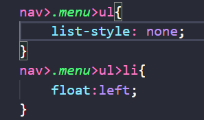
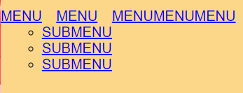
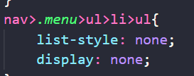
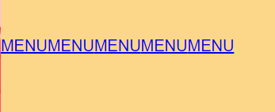
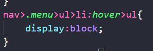
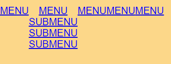
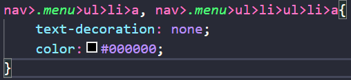

PASO 3
Primero, hacemos que la lista que hemos hecho aparezca sin viñetas usando list-style: none; en el primer ul.
Segundo, hacemos que nuestro menú aparezca en horizontal ⇿ usando float: left; en los primeros ul>li.

**En este caso, la dirección usada es nav>.menu> (etc) porque, como se ve en las anteriores imágenes, se ha usado un div
llamado "menu". Si has usado un div tú también, cambia ".menu" por el nombre que hayas usado: nav>.nombre>ul>li.
***Si no has usado ningún div entre el nav y el ul, no pongas nada: nav>ul>li.
PASO 4
Ahora mismo deberíamos tener algo así:

El siguiente paso es quitarle la lista al submenú y ocultarlo: en ul>li>ul, aplicamos:
list-style:none;
display: none;

UNA VEZ OCULTO EL SUBMENÚ, HAY QUE HACER QUE SE VEA AL PASAR EL RATÓN POR ENCIMA
PASO 4
Nuestro menú debería verse así actualmente:

Ahora, vamos a hacer que se despliegue el submenú cuando pasemos el ratón por encima del menú
del que sale en el html: nav>ul>li:hover>ul } display: block; ➝ Así, hacemos que cuando tengamos el ratón encima
del < li > específico, al aplicarle ":hover" a este, se vea el siguiente ul.

PASO 5
Ahora mismo, el menú debe verse así:

Ahora, debemos darle estilo al texto para que se vea como tal, y no como un enlace. Debemos aplicar
a ul>li>a y a ul>li>ul>li>a el estilo: text-decoration: none; y color: black; (o el que desees). La ruta es
ul>li>a y ul>li>ul>li>a porque hay que quitarle el estilo al enlace.

Ahora mismo ya tendríamos la receta para el menú desplegable, pero aún hay que darle ciertos estilos
a este y a nuestro nav...
DARLE ESTILOS A NUESTRO MENÚ Y AL NAV PARA QUE TODO ESTÉ EN SU SITIO
Continuará...